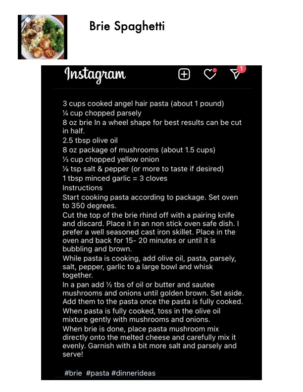

Brie Spaghetti

Original cookbook page 193
A decadent pasta dish featuring melted brie cheese baked until bubbling, tossed with angel hair pasta, sautéed mushrooms, and fresh herbs.
Cook: 25-30 minutes • Total: 25-30 minutes
Ingredients
- 3 cups cooked angel hair pasta (about 1 pound)
- ¼ cup chopped parsley
- 8 oz brie (in a wheel shape for best results, can be cut in half)
- 2.5 tbsp olive oil
- 8 oz package of mushrooms (about 1.5 cups)
- ½ cup chopped yellow onion
- ⅛ tsp salt & pepper (or more to taste if desired)
- 1 tbsp minced garlic (= 3 cloves)
Instructions
- Start cooking pasta according to package. Set oven to 350 degrees.
- Cut the top of the brie rind off with a paring knife and discard. Place it in a non-stick oven-safe dish (a well-seasoned cast iron skillet is preferred). Place in the oven and bake for 15–20 minutes or until it is bubbling and brown.
- While pasta is cooking, add olive oil, pasta, parsley, salt, pepper, and garlic to a large bowl and whisk together.
- In a pan, add ½ tbs of oil or butter and sauté mushrooms and onions until golden brown. Set aside. Add them to the pasta once the pasta is fully cooked.
- When pasta is fully cooked, toss in the olive oil mixture gently with mushrooms and onions.
- When brie is done, place pasta mushroom mix directly onto the melted cheese and carefully mix it evenly. Garnish with a bit more salt and parsley and serve!
📝 Recipe Notes
Source: Instagram post tagged with #brie #pasta #dinnerideas. A well-seasoned cast iron skillet is preferred for baking the brie. Bake brie at 350°F for 15-20 minutes until bubbling and brown.
Recipe #193 from collection